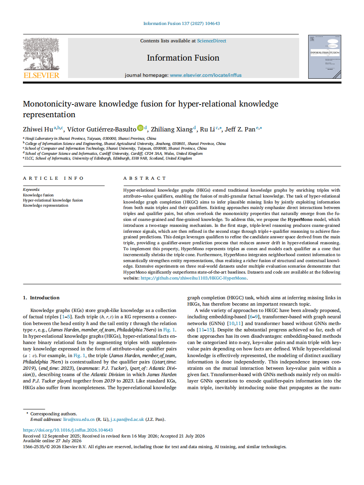
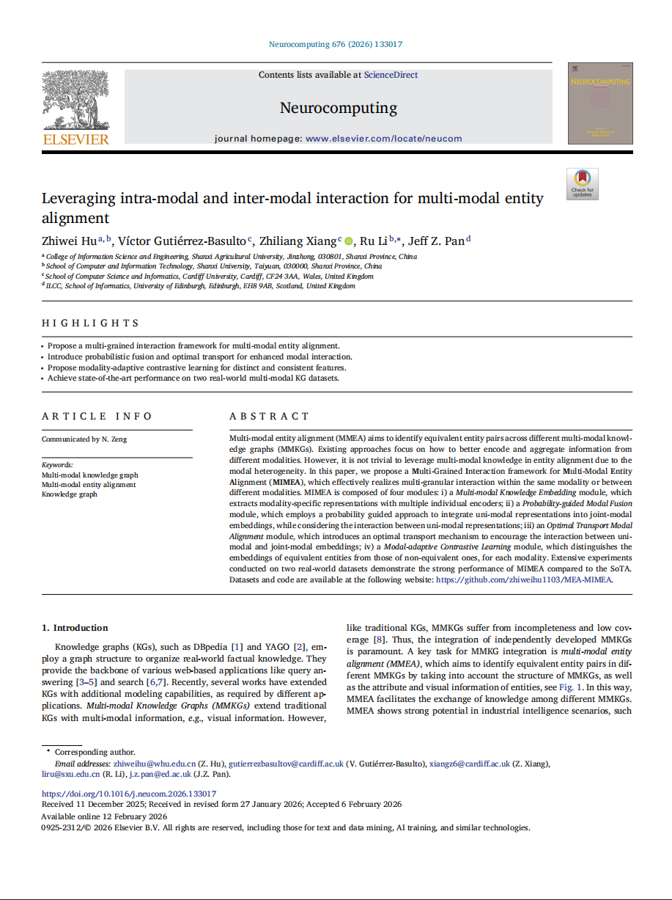
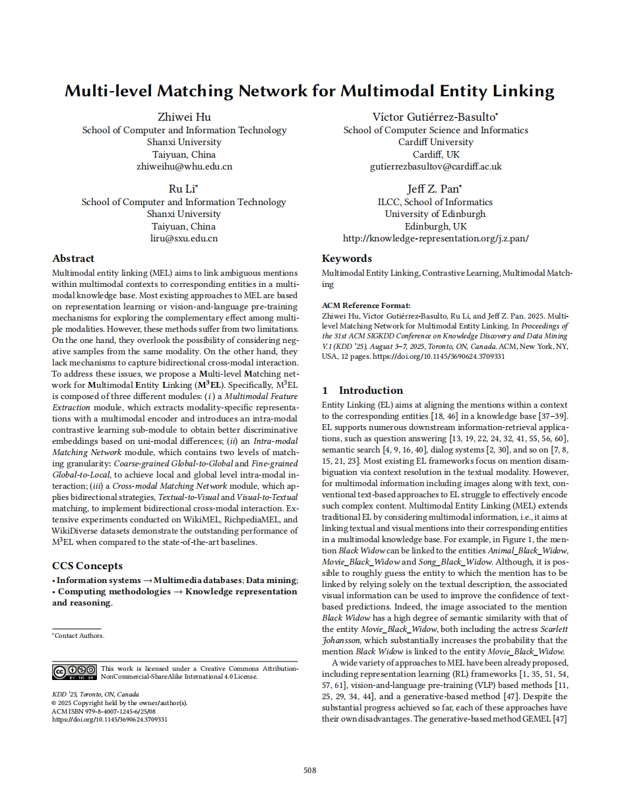
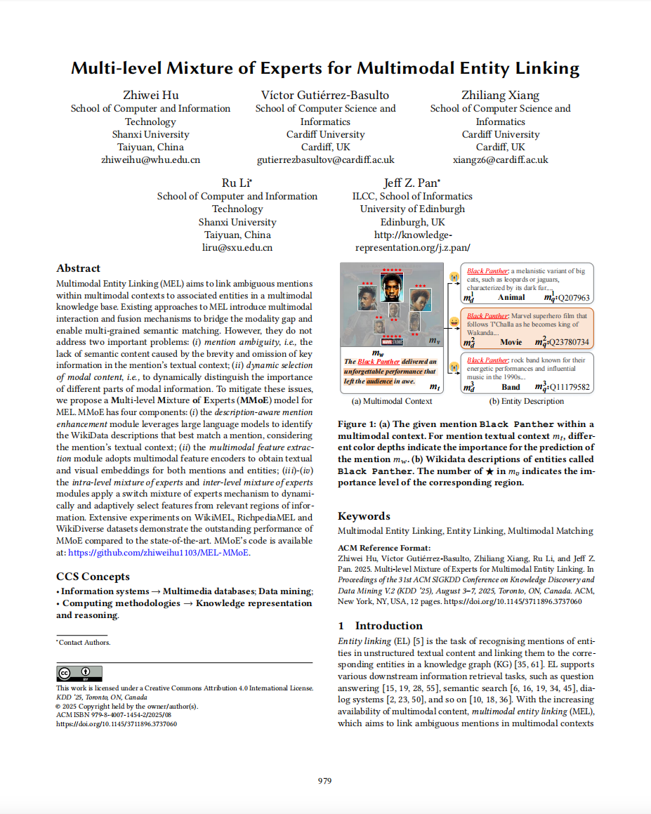
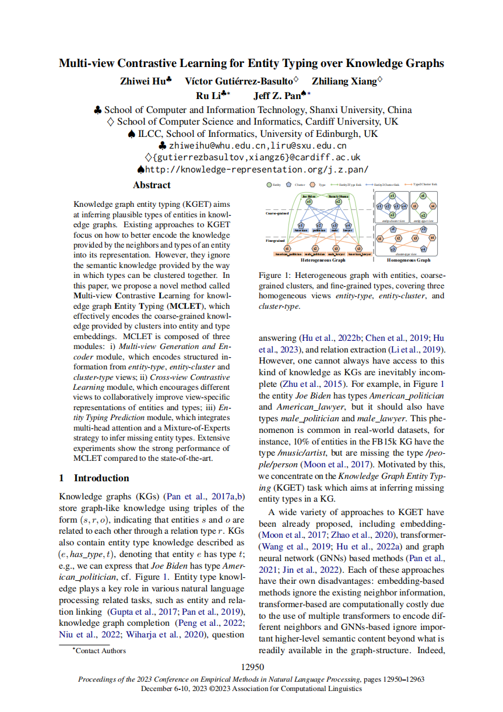
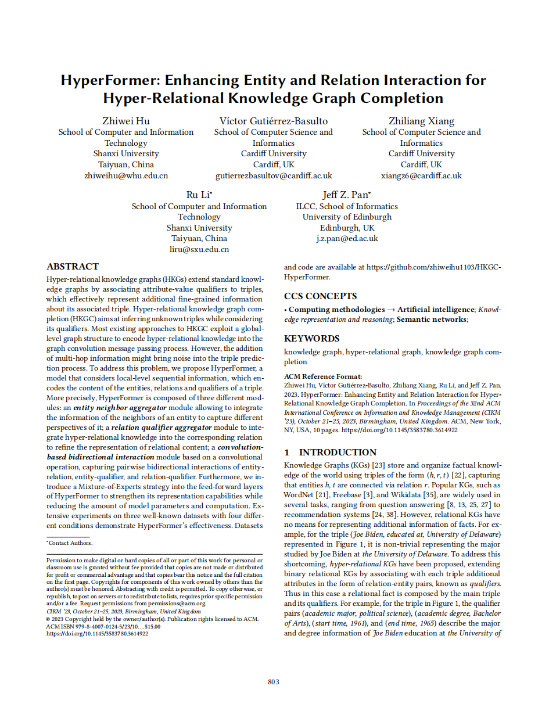
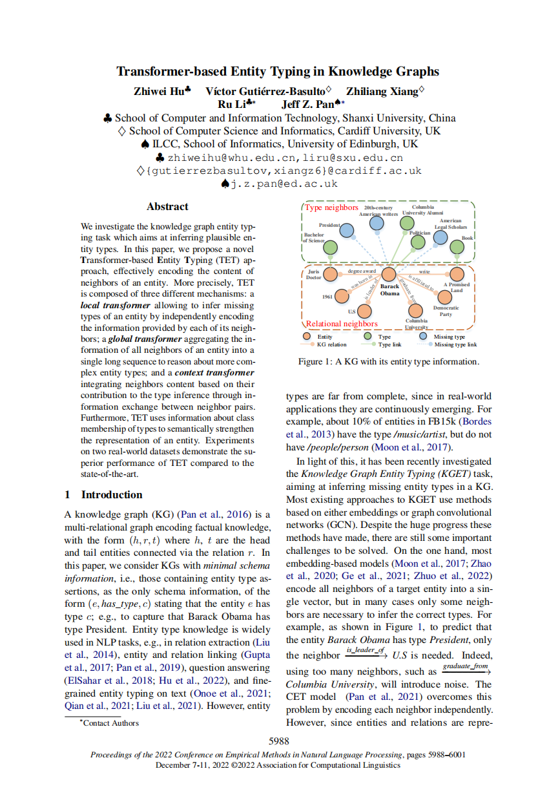
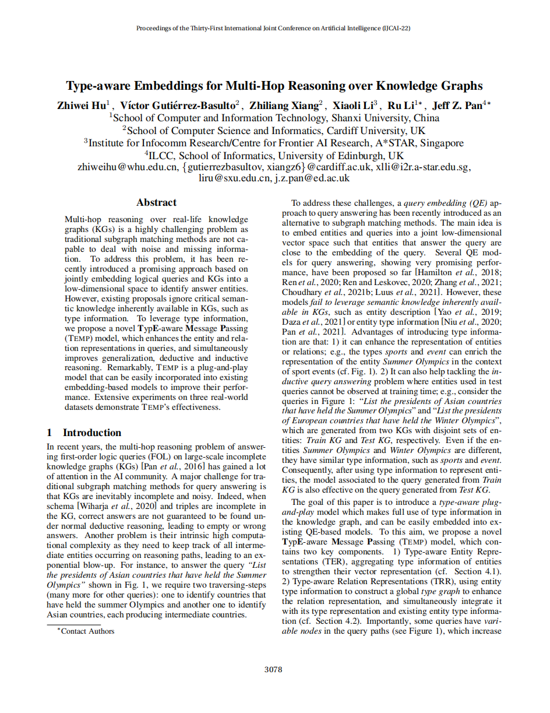

I am now an Associate Professor at Shanxi Agricultural University. Before joining Shanxi Agricultural University, I earned my Ph.D. in Computer Science from Shanxi University supervised by Prof. Ru Li, Prof. Jeff Z. Pan and Prof. Víctor Gutiérrez Basulto. During my doctoral studies, I was a visiting researcher at The University of Edinburgh under the supervision of Prof. Jeff Z. Pan.
My research interests focus on AI for breeding and representation learning for knowledge graphs.
Selected Research

Monotonicity-aware Knowledge Fusion for Hyper-relational Knowledge Representation
Zhiwei Hu, Víctor Gutiérrez-Basulto, Zhiliang Xiang, Ru Li, Jeff Z. Pan
Entity Alignment
Leveraging Intra-modal and Inter-modal Interaction for Multi-Modal Entity Alignment
Zhiwei Hu, Víctor Gutiérrez-Basulto, Zhiliang Xiang, Ru Li, Jeff Z. Pan
Entity Linking
Multi-level Matching Network for Multimodal Entity Linking
Zhiwei Hu, Víctor Gutiérrez-Basulto, Ru Li, Jeff Z. Pan
Entity Linking
Multi-level Mixture of Experts for Multimodal Entity Linking
Zhiwei Hu, Víctor Gutiérrez-Basulto, Zhiliang Xiang, Ru Li, Jeff Z. Pan
Entity Typing
Multi-view Contrastive Learning for Entity Typing over Knowledge Graphs
Zhiwei Hu, Víctor Gutiérrez-Basulto, Zhiliang Xiang, Ru Li, Jeff Z. Pan
Knowledge Graphs
HyperFormer: Enhancing Entity and Relation Interaction for Hyper-Relational Knowledge Graph Completion
Zhiwei Hu, Víctor Gutiérrez-Basulto, Zhiliang Xiang, Ru Li, Jeff Z. Pan
Entity Typing
Transformer-based Entity Typing in Knowledge Graphs
Zhiwei Hu, Víctor Gutiérrez-Basulto, Zhiliang Xiang, Ru Li, Jeff Z. Pan
Knowledge Graphs
Type-aware Embeddings for Multi-hop Reasoning over Knowledge Graphs
Zhiwei Hu, Víctor Gutiérrez-Basulto, Zhiliang Xiang, Ru Li, Jeff Z. Pan